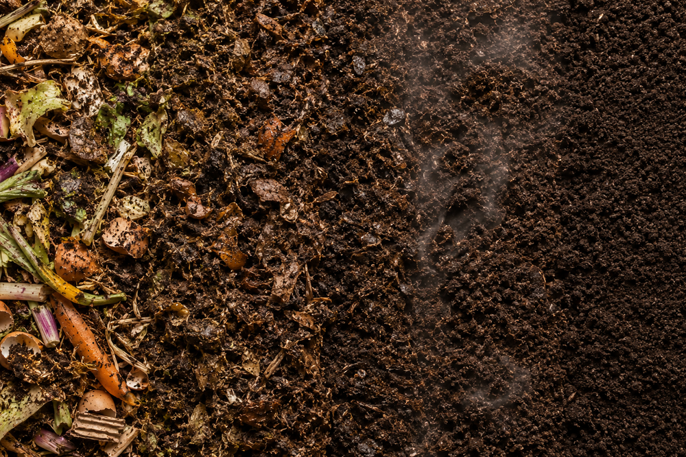

Inicio > Notas críticas > Desde Quisquiza (09 de 20)
Desde Quisquiza (09 de 20)
Compost
Calor en la putrefacción
Esta nota forma parte de una serie escrita desde Quisquiza, en los Andes colombianos, donde territorio y trabajo intelectual ya no están separados. Examina cómo ese cruce transforma mi manera de pensar la memoria, la información y las estructuras que las sostienen. Consulte todas las notas en el índice de esta sección.
El montón de compost humea en el frío de la madrugada.
Al principio, creo que es niebla.
Aquí, en Quisquiza, no sería extraño. La niebla se cuela en la cocina, en las mangas de la camisa, en los cuadernos, en las botas y en cualquier otra cosa que deje desatendida un par de minutos. Pero este vapor asciende del propio montón: restos de comida, hojas secas, hierba cortada, posos de café, ceniza, tierra, cáscaras de verduras, cartón y varias sustancias que prefiero no identificar antes de desayunar, por esas cosas de la decencia y el buen gusto.
La putrefacción, al parecer, tiene temperatura.
(Y moscas. Obvio que moscas. Alrededor de mi cara, alrededor de la horquilla, alrededor del cubo, alrededor de la idea de dignidad rural).
Desde lejos, el compost parece una acumulación. De cerca, es una secuencia de transformaciones. Las bacterias se multiplican. Los hongos se mueven a través de la materia ablandada. Los insectos abren caminos y huecos. Las larvas reducen a nada lo que aún conserva su forma. La humedad varía. El calor se acumula. El oxígeno desaparece allí donde la pila se compacta.
La estructura se desintegra de forma desigual. Las hojas se oscurecen primero. Los restos vegetales pierden sus bordes. Las fibras se aflojan. Los tallos resisten durante semanas y luego ceden, repentinamente. Lo que antes era reconocible se vuelve ambiguo. El montón se hunde hacia adentro: la arquitectura interna va cambiando.
La descomposición no es mera destrucción. Es la conversión de la forma en disponibilidad.
La materia no se conserva como tal. Se abre, se fragmenta, se digiere, se airea, se recombina. Una cáscara ya no es una cáscara. Un tallo deja de ser un tallo. Sus identidades anteriores se vuelven irrelevantes para la función que comienzan a desempeñar en la pila.
(No siempre con elegancia. Algunas mañanas, el montón de compost no muestra ningún interés por la elegancia).
La ecología depende de estos procesos. La alteración libera material, mientras que la descomposición determina si esa liberación se vuelve disponible para el crecimiento futuro. Una rama caída, una raíz muerta, hojas quemadas por las heladas, los restos de una plantación fallida: ninguno de esos elementos produce renovación por el mero hecho de haberse derrumbado. El colapso solo crea la posibilidad de redistribución.
Las condiciones son cruciales. Sin aire, la pila se vuelve anaeróbica. Sin humedad, la actividad microbiana disminuye. Sin carbono, el equilibrio se altera. Sin nitrógeno, el proceso se debilita. Sin volteo periódico, la pila se compacta y el calor se concentra de forma perjudicial. La descomposición requiere gestión, pero no un control rígido. Requiere atención al proceso.
Los archivos e instituciones se enfrentan a un problema similar, aunque a menudo lo describen con un vocabulario más claro.
Los documentos se deterioran. Los formatos se vuelven ilegibles. Las decisiones de catalogación envejecen mal. Los mandatos cambian. Los ciclos de financiación interrumpen la continuidad. El personal se marcha con conocimientos prácticos que nunca se documentaron. Las plataformas siguen siendo técnicamente funcionales, pero se vuelven cada vez más inutilizables. Las clasificaciones preservan la violencia histórica bajo una aparente estabilidad administrativa.
El colapso institucional rara vez es repentino. Se va acumulando.
El fallo visible suele aparecer tarde: la base de datos inaccesible, la guía de consulta inutilizable, el formato obsoleto, la colección ininteligible, el archivo comunitario abandonado tras la finalización de una subvención... Para entonces, las condiciones subyacentes se han ido deteriorando por años.
La respuesta habitual es la reparación superficial: una nueva interfaz, un proyecto de migración, una actualización de la terminología, una revisión de las políticas... Si bien estas medidas pueden ser necesarias, no abordan por sí solas el problema de fondo. No explican cómo el sistema metaboliza sus propios fallos, residuos, formas obsoletas, decisiones abandonadas y contradicciones acumuladas.
La preservación no implica mantener todas las estructuras indefinidamente. Algunas de ellas deben desmantelarse, algunas categorías deben eliminarse, algunas descripciones deben reescribirse y algunos proyectos no deben continuarse en su forma original. La cuestión es si las instituciones cuentan con mecanismos para transformar este deterioro en conocimiento útil.
Es ahí donde cobran importancia las infraestructuras menos visibles: la documentación de las decisiones, el historial de versiones, los registros de migración, las rutinas de mantenimiento, los protocolos de reparación, el conocimiento técnico compartido, la planificación de la sucesión, los vocabularios locales, los registros explícitos de la incertidumbre y los informes honestos de los errores.
Estas son las condiciones bajo las cuales la descomposición institucional se vuelve productiva en lugar de meramente corrosiva.
Sin ellas, el deterioro sigue siendo deterioro. Los archivos sobreviven sin contexto, los metadatos persisten sin valor interpretativo, los objetos digitales permanecen almacenados pero prácticamente muertos, las colecciones se mantienen intactas aunque se vuelven menos inteligibles, y la memoria institucional se debilita, incluso a medida que el almacenamiento se expande.
Con ellas, el deterioro deja material que se puede analizar. Los proyectos fallidos se convierten en evidencia, los sistemas obsoletos en historias de decisiones, las clasificaciones dañadas revelan puntos críticos, y la migración ya no se trata como una tarea técnica rutinaria, sino como parte de la propia biografía del archivo.
Y, en todos esos escenarios, alguien tiene que remover la pila.
Alguien tiene que darse cuenta de dónde está demasiado húmeda, demasiado seca, demasiado densa o demasiado fría. Alguien tiene que añadir materia seca cuando la pila se deteriora, o materia verde cuando la actividad disminuye, o aire cuando comienza la compactación. No es un trabajo espectacular. Es repetitivo, material y fácil de subestimar porque no se asemeja en nada a la innovación. Pero la continuidad a menudo depende precisamente de este tipo de trabajo.
Aquí arriba, el compost sigue humeando. Al mediodía volverá a tener su aspecto normal: oscuro, húmedo, irregular, lleno de fragmentos aún a medio camino entre una forma y otra. Nada en él sugiere que esté terminado. El montón no es un objeto acabado. Es una transición controlada.
Hundo la horquilla. La superficie se abre. Y el calor asciende desde la parte que ya se está descomponiendo.